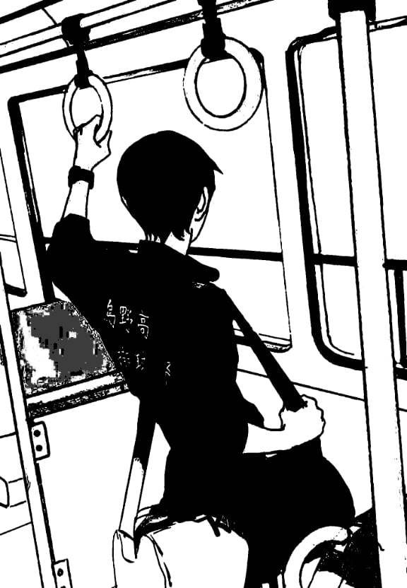
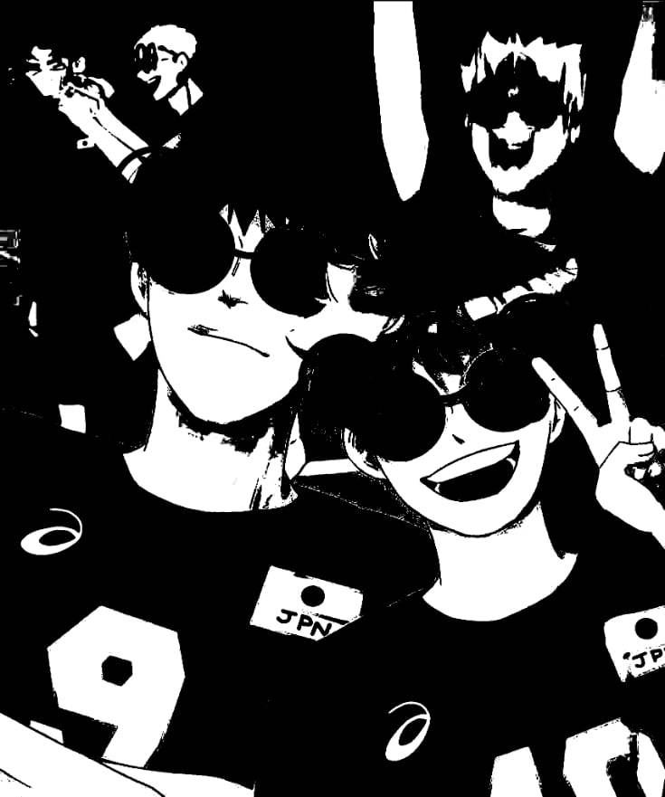
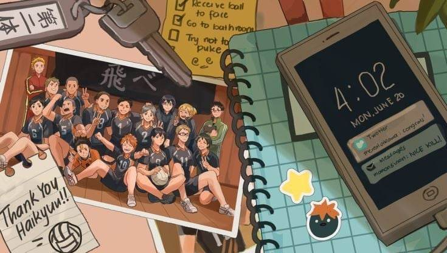
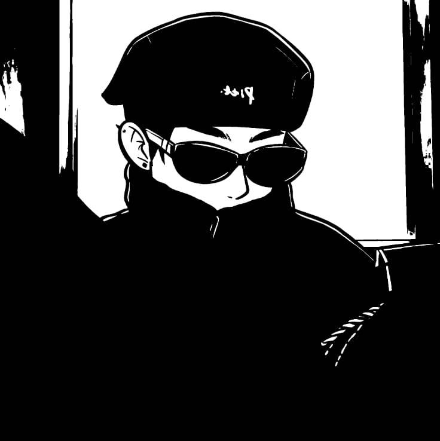

My name is Ian, 16 years old. A grade 10 student in
Gen. Pio Del Pilar National High School from 10-Jose
Rizal. I am reliable but very short-tempered. I lose
my calm if not understood properly. I get very
irritated internally, but that doesn't show in my
behavior. However, I would like to change this
character trait a little because my friends and dear
ones often do not notice that I have sometroubles.

Thus, they do not offer help when I need it. Good or
bad, this is me, trying to contemplate the world as it
is, revealing its true colors. I believe life is a
gift, and it should be treated like one, with love,
care, and respect.


